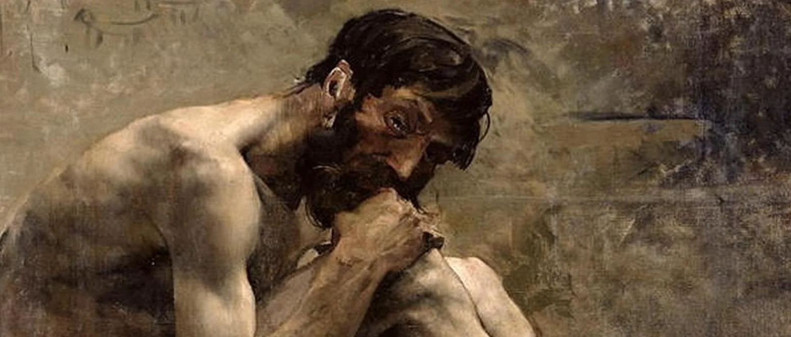
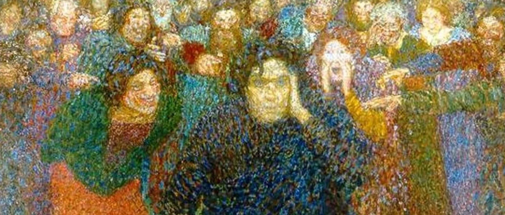
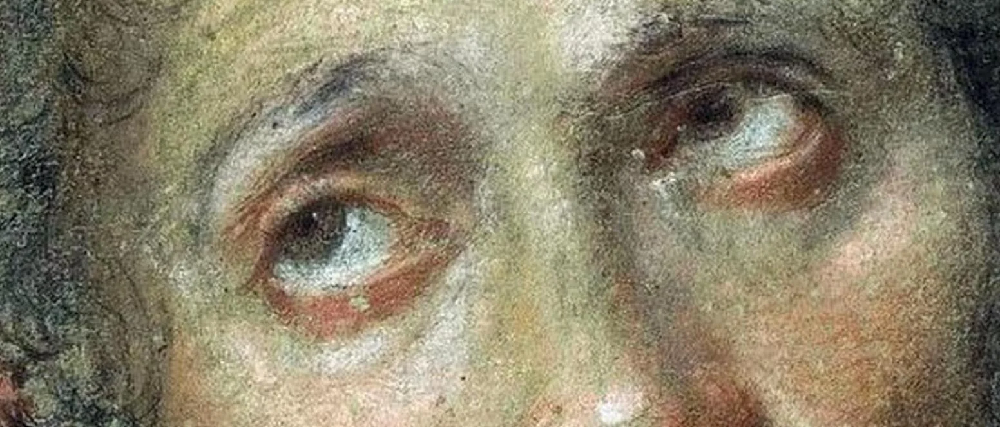
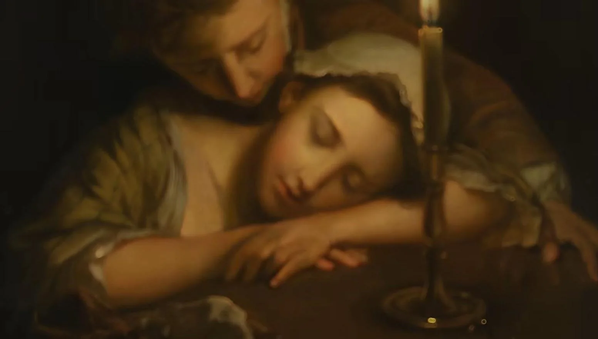
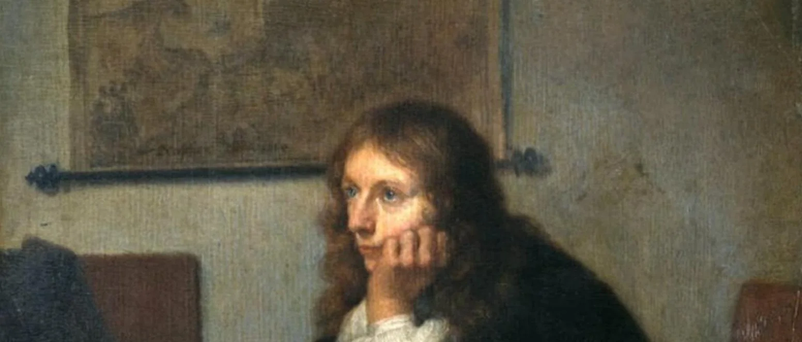
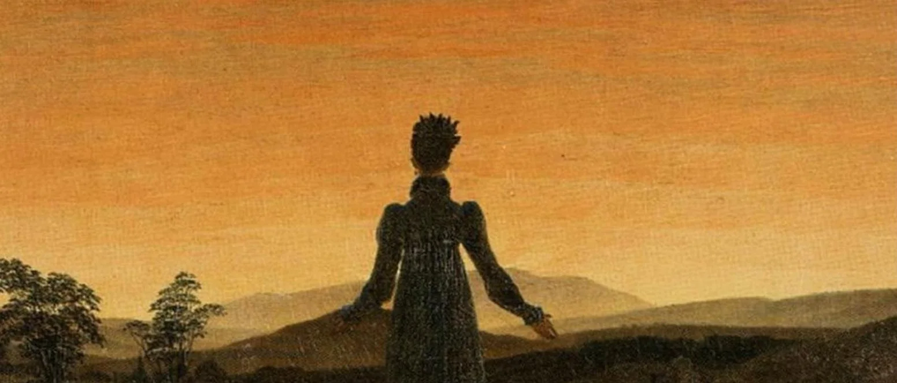

Michel de MontaigneEnsaios, 1580
I — A ilusão do controle
Controlaro incontrolável
A gente planeja, ensaia, se preocupa, como se a vida fosse uma equação que fecha com esforço. Montaigne olhou para isso sem ilusão: o controle é, quase sempre, uma fantasia que cansa.
II — A plateia
viver parao olhar alheio
Desde criança, aprovação vira recompensa. Aos poucos você molda a fala, a roupa, as escolhas, até não saber mais o que era seu. Montaigne escreveu para se entender, não para convencer ninguém.
III — A torre
Uma torre,não uma fuga
Perdeu o melhor amigo, perdeu cinco de seus seis filhos ainda pequenos, viu a França se rasgar em guerra civil. Não endureceu. Subiu para uma torre de livros, com frases em latim no teto, e começou a estudar a si mesmo.
IV — Desapego é clareza
Desapego não é frieza. Entrega não é desistir. Leveza não é descaso.
V — Amar sem prender
segurar alguémé perder
A amizade com La Boétie não cobrava nada. Só existia. Montaigne viu ali o que acontece quando se ama alguém sem tentar possuí-lo.
VI — Soltar
O que importacomeça a florescer.
Quando você para de se importar com o que nunca importou, sobra espaço. Para falar com verdade, errar com coragem, viver sem pedir licença.

Segure a pintura e depois solte
Uma experiência de dez segundos
Segure.
Clique e não solte. No celular, segure o botão.
Mais forte.
veja o que acontece com o que você aperta
Agora, solte.
Ela só se abriu quando você soltou.
O que o vídeo pede
Seis coisas para soltar
Montaigne não pede para você parar de se importar com tudo. Pede o contrário: separar o que merece sua energia do que só consome. Agir com dedicação, sem obsessão. Amar sem possessividade. Buscar sem se perder no caminho. Passe o dedo ou o mouse nas cartas.

I · A plateia
Quem vive de aplauso entrega a chave de casa para estranhos.
II · O roteiro
A vida não é máquina para operar. É organismo, e floresce para quem aceita o imprevisto.

III · A perfeição
Montaigne confessou as próprias vaidades e incoerências. Foi isso que o tornou universal.

IV · O outro
Presença, não cobrança. Entrega, não domínio.

V · A certeza
“Que sais-je?” O que sei eu? A dúvida de Montaigne não paralisa. Ela desarma.

VI · O medo
O medo de falhar costuma ser o único obstáculo real entre você e o que quer viver.
Antes da leveza
Uma vida que perdeu quase tudo
- 1533Nasce no PérigordFilho de nobres, aprende latim antes do francês. É criado para ser alguém importante.
- 1563Morre La BoétieO melhor amigo. “Porque era ele, porque era eu”, Montaigne escreveria depois.
- 1570sAs filhasDe seis filhos, só uma passa da infância. A dor não o deixa cínico. Deixa mais real.
- 1571A torreAos 38 anos, larga os cargos e sobe para a biblioteca. Começa o estudo de si mesmo.
- 1580Os EnsaiosUm livro sobre um homem comum, com fraquezas à mostra. Inventa um gênero.
- 1592Morre em casaAinda reescrevendo. Nunca chegou a uma versão final, e não parecia se importar.
A pergunta do vídeo
O que você ainda está segurando?
De onde tudo isto saiu